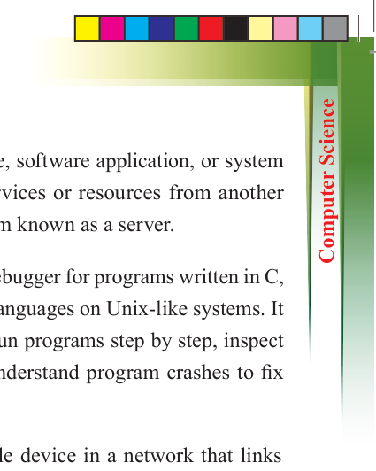
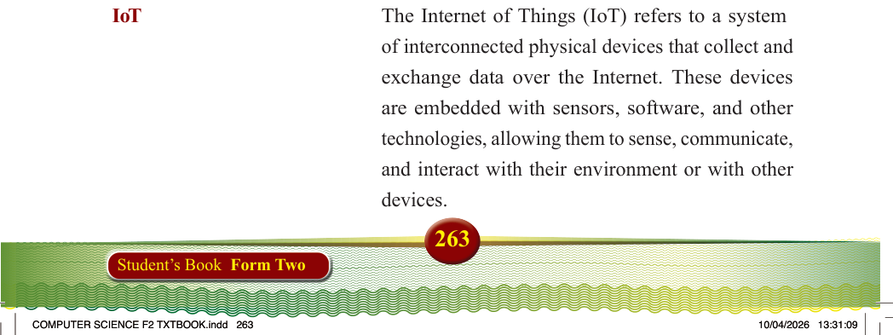

Client
Client is a device, software application, or system
that requests services or resources from another
device or program known as a server.
GDB
is the standard debugger for programs written in C,
C++, and other languages on Unix-like systems. It allows users to run programs step by step, inspect
variables, and understand program crashes to fix
errors.
Hub
A hub is a simple device in a network that links
several computers or devices, enabling them to
exchange data.
Intrusion Detection System
An Intrusion Detection System (IDS) is a security
tool used to monitor network traffic or system
activity and detect signs of suspicious or malicious behavior such as hackers trying to break in. IDS is
like a security camera for your computer or network.
It watches what’s happening in real time. If it sees
something strange or dangerous, it alerts the system
admin.
Intrusion
In cybersecurity, intrusion means unauthorized
access or actions taken inside a computer system, network, or application by someone who does not have permission.
IoT
The Internet of Things (IoT) refers to a system
of interconnected physical devices that collect and
exchange data over the Internet. These devices are embedded with sensors, software, and other
technologies, allowing them to sense, communicate,
and interact with their environment or with other
devices.